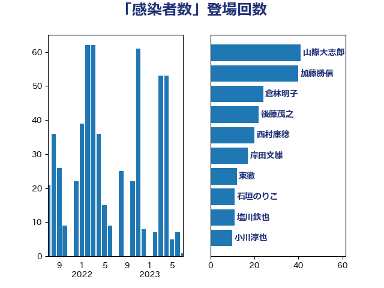

単語「感染者数」

| 山際大志郎 | 自由民主党 | 41 回 |
| 加藤勝信 | 自由民主党 | 40 回 |
| 倉林明子 | 日本共産党 | 24 回 |
| 後藤茂之 | 自由民主党 | 22 回 |
| 西村康稔 | 自由民主党 | 20 回 |
| 岸田文雄 | 自由民主党 | 17 回 |
| 東徹 | 日本維新の会 | 12 回 |
| 石垣のりこ | 立憲民主党 | 11 回 |
| 塩川鉄也 | 日本共産党 | 11 回 |
| 小川淳也 | 立憲民主党 | 10 回 |
| 井坂信彦 | 立憲民主党 | 9 回 |
| 中島克仁 | 立憲民主党 | 9 回 |
| 打越さく良 | 立憲民主党 | 8 回 |
| 中谷一馬 | 立憲民主党 | 8 回 |
| 塩田博昭 | 公明党 | 7 回 |
| こやり隆史 | 自由民主党 | 7 回 |
| 柚木道義 | 立憲民主党 | 6 回 |
| 鈴木英敬 | 自由民主党 | 5 回 |
| 赤嶺政賢 | 日本共産党 | 5 回 |
| 横沢高徳 | 立憲民主党 | 5 回 |
| 川田龍平 | 立憲民主党 | 5 回 |
| 山井和則 | 立憲民主党 | 5 回 |
| 宮本徹 | 日本共産党 | 5 回 |
| 浜地雅一 | 公明党 | 4 回 |
| 柳本顕 | 自由民主党 | 4 回 |
| 宮口治子 | 立憲民主党 | 4 回 |
| 佐藤英道 | 公明党 | 4 回 |
| 金城泰邦 | 公明党 | 3 回 |
| 蓮舫 | 立憲民主党 | 3 回 |
| 菅義偉 | 自由民主党 | 3 回 |
| 橋本岳 | 自由民主党 | 3 回 |
| 末松信介 | 自由民主党 | 3 回 |
| 後藤祐一 | 立憲民主党 | 3 回 |
| 吉川沙織 | 立憲民主党 | 3 回 |
| 井上哲士 | 日本共産党 | 3 回 |
| 長妻昭 | 立憲民主党 | 2 回 |
| 金村龍那 | 日本維新の会 | 2 回 |
| 西岡秀子 | 国民民主党 | 2 回 |
| 船橋利実 | 自由民主党 | 2 回 |
| 羽生田俊 | 自由民主党 | 2 回 |
| 紙智子 | 日本共産党 | 2 回 |
| 福島みずほ | 社会民主党 | 2 回 |
| 石井章 | 日本維新の会 | 2 回 |
| 田村憲久 | 自由民主党 | 2 回 |
| 田村まみ | 国民民主党 | 2 回 |
| 田中健 | 国民民主党 | 2 回 |
| 源馬謙太郎 | 立憲民主党 | 2 回 |
| 浅野哲 | 国民民主党 | 2 回 |
| 浅田均 | 日本維新の会 | 2 回 |
| 水岡俊一 | 立憲民主党 | 2 回 |
| 武部新 | 自由民主党 | 2 回 |
| 梅村聡 | 日本維新の会 | 2 回 |
| 柳ヶ瀬裕文 | 日本維新の会 | 2 回 |
| 林芳正 | 自由民主党 | 2 回 |
| 杉尾秀哉 | 立憲民主党 | 2 回 |
| 早稲田ゆき | 立憲民主党 | 2 回 |
| 島村大 | 自由民主党 | 2 回 |
| 山本有二 | 自由民主党 | 2 回 |
| 山崎正恭 | 公明党 | 2 回 |
| 山下雄平 | 自由民主党 | 2 回 |
| 小沼巧 | 立憲民主党 | 2 回 |
| 宮本岳志 | 日本共産党 | 2 回 |
| 吉良よし子 | 日本共産党 | 2 回 |
| 伊東信久 | 日本維新の会 | 2 回 |
| 伊佐進一 | 公明党 | 2 回 |
| 井野俊郎 | 自由民主党 | 2 回 |
| 世耕弘成 | 自由民主党 | 2 回 |
| 阿部司 | 日本維新の会 | 1 回 |
| 長友慎治 | 国民民主党 | 1 回 |
| 野田聖子 | 自由民主党 | 1 回 |
| 野田国義 | 立憲民主党 | 1 回 |
| 遠藤敬 | 日本維新の会 | 1 回 |
| 赤澤亮正 | 自由民主党 | 1 回 |
| 谷合正明 | 公明党 | 1 回 |
| 角田秀穂 | 公明党 | 1 回 |
| 藤丸敏 | 自由民主党 | 1 回 |
| 舩後靖彦 | れいわ新選組 | 1 回 |
| 舟山康江 | 国民民主党 | 1 回 |
| 自見はなこ | 自由民主党 | 1 回 |
| 篠原孝 | 立憲民主党 | 1 回 |
| 稲田朋美 | 自由民主党 | 1 回 |
| 稲津久 | 公明党 | 1 回 |
| 福重隆浩 | 公明党 | 1 回 |
| 神谷政幸 | 自由民主党 | 1 回 |
| 石橋通宏 | 立憲民主党 | 1 回 |
| 石井浩郎 | 自由民主党 | 1 回 |
| 石井啓一 | 公明党 | 1 回 |
| 畦元将吾 | 自由民主党 | 1 回 |
| 田村智子 | 日本共産党 | 1 回 |
| 熊谷裕人 | 立憲民主党 | 1 回 |
| 清水貴之 | 日本維新の会 | 1 回 |
| 清水真人 | 自由民主党 | 1 回 |
| 河野義博 | 公明党 | 1 回 |
| 河西宏一 | 公明党 | 1 回 |
| 池下卓 | 日本維新の会 | 1 回 |
| 江島潔 | 自由民主党 | 1 回 |
| 水野素子 | 立憲民主党 | 1 回 |
| 武井俊輔 | 自由民主党 | 1 回 |
| 森屋隆 | 立憲民主党 | 1 回 |
| 根本幸典 | 自由民主党 | 1 回 |
| 枝野幸男 | 立憲民主党 | 1 回 |
| 杉本和巳 | 日本維新の会 | 1 回 |
| 御法川信英 | 自由民主党 | 1 回 |
| 岩谷良平 | 日本維新の会 | 1 回 |
| 岩渕友 | 日本共産党 | 1 回 |
| 山添拓 | 日本共産党 | 1 回 |
| 山本香苗 | 公明党 | 1 回 |
| 小野泰輔 | 日本維新の会 | 1 回 |
| 小林茂樹 | 自由民主党 | 1 回 |
| 宮路拓馬 | 自由民主党 | 1 回 |
| 大串博志 | 立憲民主党 | 1 回 |
| 堀内詔子 | 自由民主党 | 1 回 |
| 吉田統彦 | 立憲民主党 | 1 回 |
| 吉田はるみ | 立憲民主党 | 1 回 |
| 吉田とも代 | 日本維新の会 | 1 回 |
| 吉川元 | 立憲民主党 | 1 回 |
| 古川元久 | 国民民主党 | 1 回 |
| 友納理緒 | 自由民主党 | 1 回 |
| 勝目康 | 自由民主党 | 1 回 |
| 伊藤岳 | 日本共産党 | 1 回 |
| 伊藤俊輔 | 立憲民主党 | 1 回 |
| 今枝宗一郎 | 自由民主党 | 1 回 |
| 仁木博文 | 無所属 | 1 回 |
| 井上貴博 | 自由民主党 | 1 回 |
| 丹羽秀樹 | 自由民主党 | 1 回 |
| 中野洋昌 | 公明党 | 1 回 |
| 上田清司 | 国民民主党 | 1 回 |
| 上月良祐 | 自由民主党 | 1 回 |
| 三浦信祐 | 公明党 | 1 回 |
| ながえ孝子 | 無所属 | 1 回 |
| たがや亮 | れいわ新選組 | 1 回 |